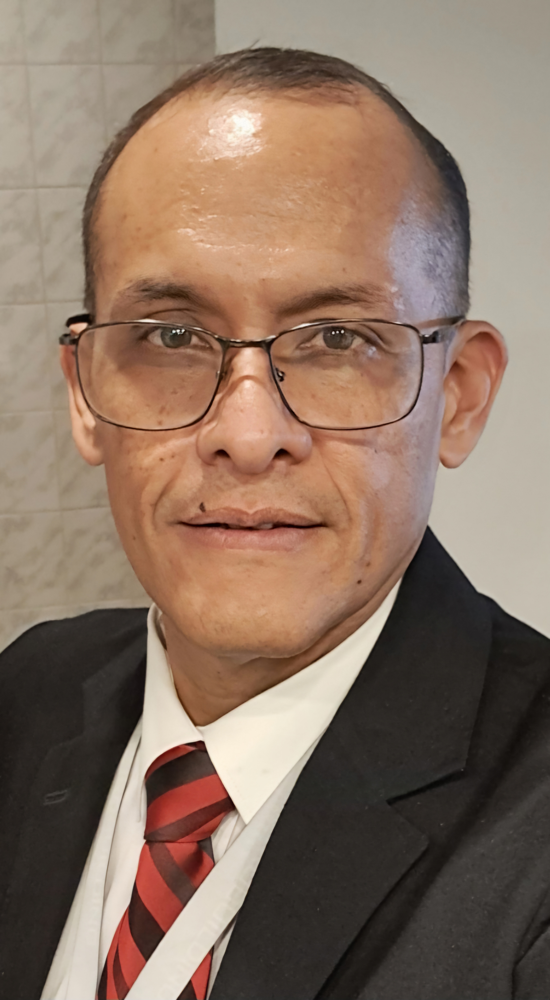

Personal
- linktr.ee/mdasuaje
- Cuenta de Google con FB/IG privados.
- Página pública "Tu Digital" para publicaciones, conectada a IG: @wrk2ln.
- Cuenta Hotmail + LinkedIn.
- Incluye X (Twitter), WordPress y blogs personales.
Tech-Entrepreneur | Arquitecto de Productos y Servicios Tecnológicos

Tech-Entrepreneur building technology products/services with evidence-driven execution. Impulso ideas de desarrollo hasta convertirlas en productos reales, combinando ingeniería, estrategia de negocio y enfoque de impacto.
Editor y constructor de soluciones digitales orientadas a resultados. Trabajo en productos, automatización y plataformas cloud, con visión emprendedora para hacer que cada iniciativa llegue a producción y genere valor medible.
Consolidar una operación tecnológica remota, sostenible y global para evolucionar a un estilo digital nomad, manteniendo una ruta de crecimiento gradual: bootstrapping, validación de mercado y apertura a inversión/donaciones cuando aceleren resultados.
Disponible para contratación, colaboraciones, partnerships estratégicos y conversaciones de inversión/donación para escalar productos tecnológicos.